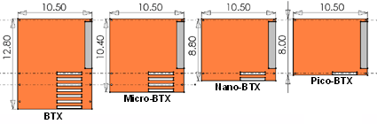

Il BTX (Balanced Technology Extended) è un form factor per scheda madre ovvero uno standard che ne definisce dimensioni e layout di riferimento, originariamente pensato per sostituire, tra il 2004 e il 2005, lo storico formato ATX (presente, nella sua prima revisione, dal 1995). È stato proposto, come per l'ATX, da Intel, che nel Settembre 2006 ha annunciato la cancellazione del progetto [1]. Il motivo principale della sua progettazione è stata l'ottimizzazione per ridurre al minimo i problemi che si sono venuti a creare con l'evoluzione delle tecnologie, principalmente le grandi quantità di calore dissipato dalle CPU e schede video più potenti. A questo proposito il layout della scheda madre ha subito diverse modifiche, ad esempio il posizionamento degli slot ram in modo che siano paralleli agli altri slot pci della scheda madre (nello standard atx gli slot ram sono invece ortogonali al flusso di aria che si crea nel pc, che va dall'anteriore del case verso il posteriore, e quindi i moduli ram in piccola misura tendono a ostacolare questo flusso).